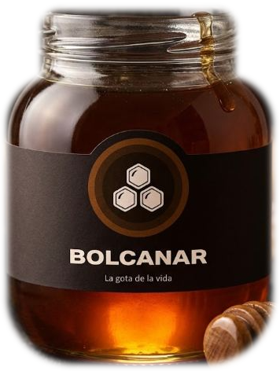
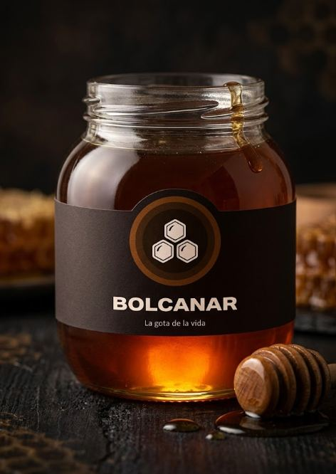
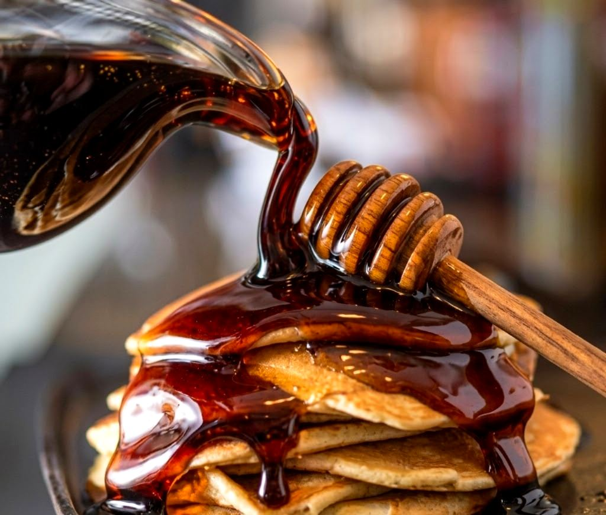
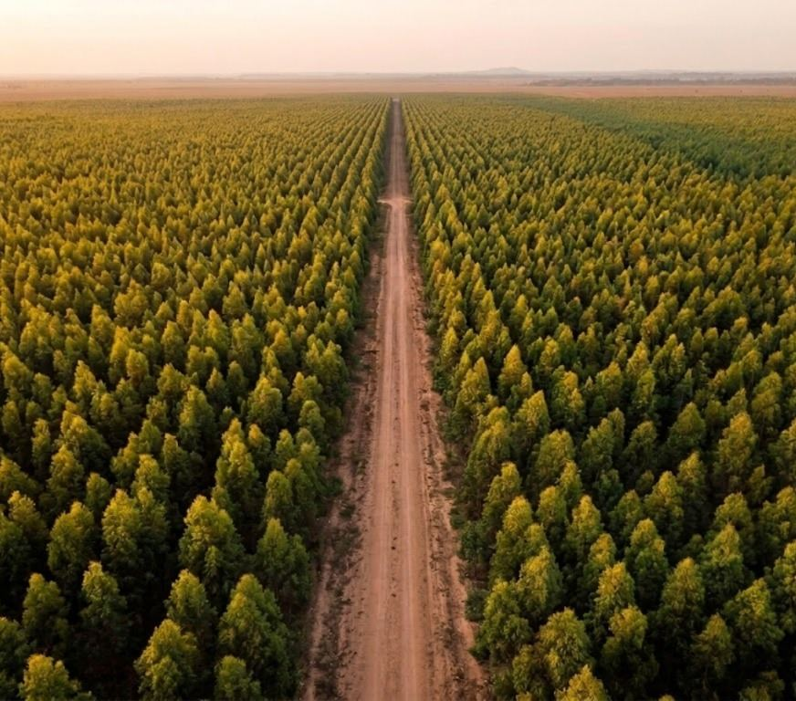
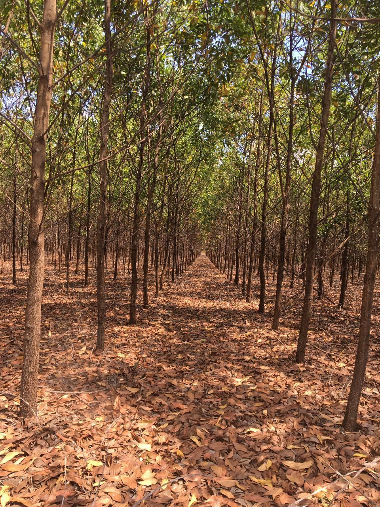
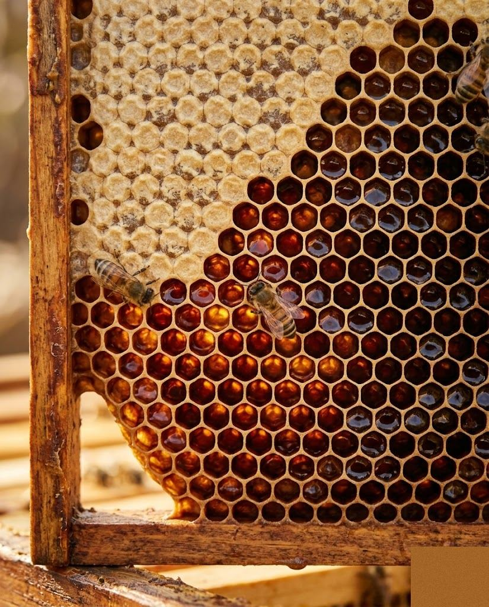
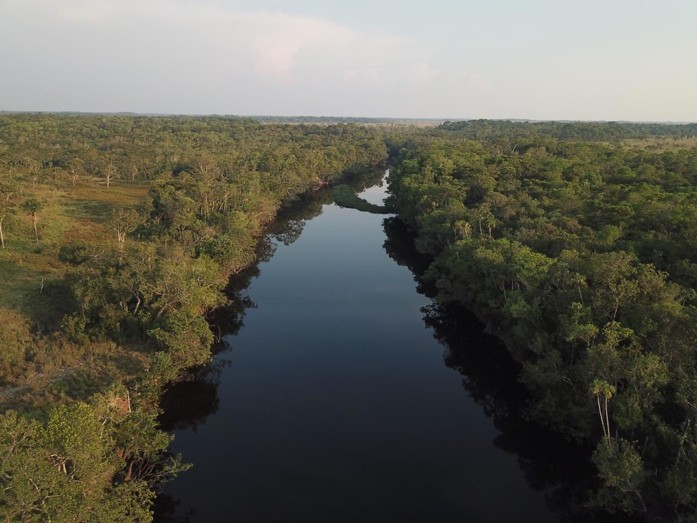
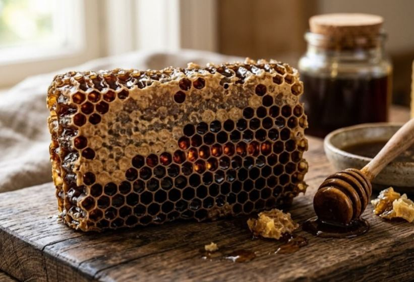
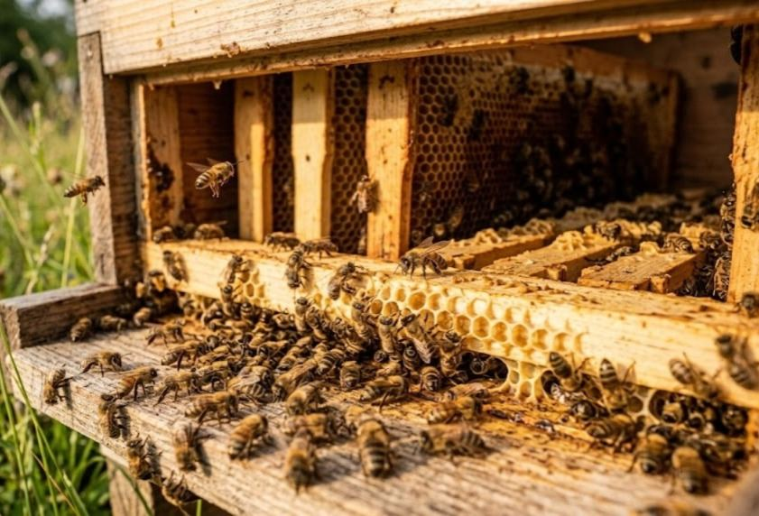
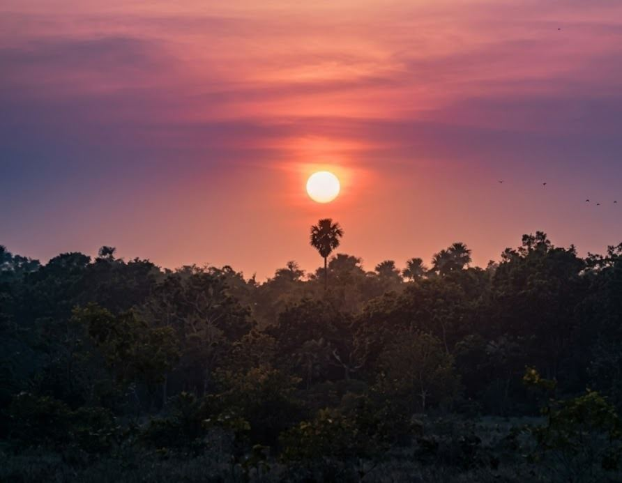

360 g360 g
$25.000
Ideal para conocer Bolcanar por primera vez.
ReservarOro oscuro de la Orinoquía. Una miel rara y profunda, nacida del corazón salvaje de Colombia.

Bolcanar nace en los llanos del Vichada, donde la sabana se encuentra con la selva y las abejas trabajan lejos de todo ruido. Somos un emprendimiento artesanal dedicado a una sola cosa, hecha con devoción: una miel oscura, rara y excepcional.
Nuestra miel tiene el color profundo del arce y un carácter intenso que sorprende al primer instante. No es la miel dorada de siempre; es el fruto de una tierra indómita y de un proceso paciente, hecho a mano y sin prisas.
Cada frasco de Bolcanar es una pieza limitada. Cosechamos en pequeños lotes, respetando los tiempos de las abejas y la pureza del ecosistema. Lujo, en su forma más honesta.

El recorrido de una miel que guarda, en cada gota, el carácter de una de las tierras más vírgenes de Colombia.

En el oriente de Colombia, donde el río Orinoco dibuja la frontera y el cielo parece infinito, se extiende Vichada: una tierra de sabanas inmensas, morichales y selvas vírgenes.
Es un lugar remoto, casi intacto. Esa lejanía es, precisamente, lo que protege la pureza de nuestra miel.

Entre flores silvestres que prosperan en suelos sin intervención, nuestras abejas recogen un néctar distinto. El clima, la luz y la riqueza botánica de la región dan origen a una miel oscura, densa y aromática.
En su sabor hay notas que recuerdan a la melaza, la madera y la tierra cálida: un perfil imposible de imitar.

Producir miel oscura exige tiempo: respetar los ciclos de floración, intervenir lo mínimo y dejar que la naturaleza marque el ritmo.
Envasamos a mano, lote por lote. El resultado es una miel que no se parece a ninguna otra y que llega a tu mesa tal como nació: salvaje, íntegra y excepcional.
Cuatro formatos de nuestra miel oscura.

360 gIdeal para conocer Bolcanar por primera vez.
ReservarEl equilibrio perfecto entre cantidad y valor. La elección natural.
ReservarPara quienes ya no quieren quedarse sin miel.
ReservarFormato de volumen para hogares y regalos generosos.
ReservarCada frasco sostiene a las personas y al territorio que lo hacen posible.
Trabajamos junto a familias apicultoras de Vichada, con precios justos y conocimiento compartido para que la tradición crezca y permanezca.
Cosechamos en pequeños lotes y sin químicos, cuidando la salud de las colmenas y la pureza de cada gota de miel.
Cada colmena poliniza la sabana y la selva, ayudando a preservar la biodiversidad única de la Orinoquía colombiana.
Panales, paisajes de Vichada y la miel oscura que nace de esa tierra.




Cada lote de Bolcanar es limitado. Escríbenos para reservar tu frasco o conocer la fecha de la próxima cosecha.